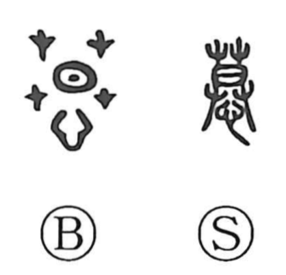

慕

Kun: shitau | On: bo
to yearn for ・ to adore ・ to long for
Explanation
A phono-semantic (picto-phonetic) character: the original form is 慕, with 莫 serving as the phonetic element that gives the On reading bo, and 心 underneath supplying the sense of the heart. The graph 莫 also evokes nuances such as searching or a grove, images that blend into feelings of longing and thought. Joined with 心, it portrays a heart that seeks, yearns, and loves. Hence 慕 means to yearn for, to long for in love, and to think fondly of. Mencius (Wan Zhang, Part I) illustrates this innate impulse: in childhood, people cling to their parents.